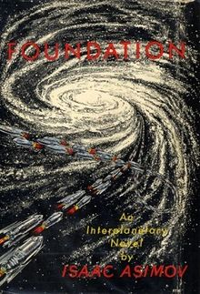

The Foundation series is a science fiction book series written by American author Isaac Asimov. First published as a series of short stories in 1942–50, and subsequently in three collections in 1951–53, for thirty years the series was a trilogy: Foundation, Foundation and Empire and Second Foundation. It won the one-time Hugo Award for "Best All-Time Series" in 1966.[1][2] Asimov began adding new volumes in 1981, with two sequels: Foundation's Edge and Foundation and Earth, and two prequels: Prelude to Foundation and Forward the Foundation. The additions made reference to events in Asimov's Robot and Empire series, indicating that they also were set in the same fictional universe.
|  First edition dust-jacket of Foundation | |
| Author | Isaac Asimov |
|---|---|
| Country | United States |
| Language | English |
| Genre | Science fiction |
| Publisher | Astounding Magazine, Gnome Press, Spectra, Doubleday |
| Published | 1942–1993 |
| Media type | |
{kind=link}
The premise of the stories is that, in the waning days of a future Galactic Empire, the mathematician Hari Seldon spends his life developing a theory of psychohistory, a new and effective mathematical sociology. Using statistical laws of mass action, it can predict the future of large populations. Seldon foresees the imminent fall of the Empire, which encompasses the entire Milky Way, and a Dark Age lasting 30,000 years before a second empire arises. Although the momentum of the Empire's fall is too great to stop, Seldon devises a plan by which "the onrushing mass of events must be deflected just a little" to eventually limit this interregnum to just one thousand years. To implement his plan, Seldon creates the Foundations—two groups of scientists and engineers settled at opposite ends of the galaxy—to preserve the spirit of science and civilization, and thus become the cornerstones of the new galactic empire.
One key feature of Seldon's theory, which has proved influential in real-world social science,[3] is the uncertainty principle of sociology: if a population gains knowledge of its predicted behavior, its self-aware collective actions become unpredictable.
Publication historyEdit
Original storiesEdit
The original trilogy of novels collected a series of eight short stories published in Astounding Magazine between May 1942 and January 1950. According to Asimov, the premise was based on ideas in Edward Gibbon's History of the Decline and Fall of the Roman Empire, and was invented spontaneously on his way to meet with editor John W. Campbell, with whom he developed the concepts of the collapse of the Galactic Empire, the civilization-preserving Foundations, and psychohistory.[4] Asimov wrote these early stories in his West Philadelphia apartment when he worked at the Philadelphia Naval Yard.[original research?]
Foundation trilogyEdit
The first four stories were collected, along with a new introductory story, and published by Gnome Press in 1951 as Foundation. The later stories were published in pairs by Gnome as Foundation and Empire (1952) and Second Foundation (1953), resulting in the "Foundation Trilogy", as the series is still known.[5]
Later sequels and prequelsEdit
In 1981, Asimov was persuaded by his publishers to write a fourth book, which became Foundation's Edge (1982).[6]
Four years later, Asimov followed up with yet another sequel, Foundation and Earth (1986), which was followed by the prequels Prelude to Foundation (1988) and Forward the Foundation (1993), published after his death in 1992. During the two-year lapse between writing the sequels and prequels, Asimov had tied in his Foundation series with his various other series, creating a single unified universe. The basic link is mentioned in Foundation's Edge: an obscure myth about a first wave of space settlements with robots and then a second without. The idea is the one developed in Robots of Dawn, which, in addition to showing the way that the second wave of settlements was to be allowed, illustrates the benefits and shortcomings of the first wave of settlements and their so-called C/Fe (carbon/iron, signifying humans and robots together) culture. In this same book, the word psychohistory is used to describe the nascent idea of Seldon's work. Some of the drawbacks to this style of colonization, also called Spacer culture, are also exemplified by the events described all the way back in 1957's The Naked Sun.
The link between the Robot and Foundation universes was tightened by letting the robot R. Daneel Olivaw - originally introduced in The Caves of Steel - live on for tens of thousands of years and play a major role behind the scenes in both the Galactic Empire in its heyday and in the rise of the two Foundations to take its place.
Asimov's Foundation series novelsEdit
Note: This plot outline for the seven novels follows the series' in-universe chronology, which is not the order of publication. After many years as a trilogy comprising Foundation, Foundation and Empire, and Second Foundation, the series was expanded by two prequels and two sequels.
Prelude to Foundation (1988)Edit
Prelude to Foundation opens on the planet Trantor, the empire's capital planet, the day after Hari Seldon has given a speech at a mathematics conference. Several parties become aware of the content of his speech (that using mathematical formulas, it may be possible to predict the future course of human history). Seldon is hounded by the Emperor and various employed thugs who are working surreptitiously, which forces him into exile. Over the course of the book, Seldon and Dors Venabili, a female companion and professor of history, are taken from location to location by Chetter Hummin who, under the guise of a reporter, introduces them to various Trantorian walks of life in his attempts to keep Seldon hidden from the Emperor. Throughout their adventures all over Trantor, Seldon continuously denies that psychohistory is a realistic science. Even if feasible, it may take several decades to develop. Hummin, however, is convinced that Seldon knows something, so he continuously presses him to work out a starting point to develop psychohistory. Eventually, after much traveling and introductions to various, diverse cultures on Trantor, Seldon realizes that using the entire known galaxy as a starting point is too overwhelming; he then decides to use Trantor as a model to work out the science, with a goal of later using the applied knowledge on the rest of the galaxy.
Forward the Foundation (1993)Edit
Eight years after the events of Prelude, Seldon has worked out the science of psychohistory and has applied it on a galactic scale. His notability and fame increase and he is eventually promoted to First Minister to the Emperor. As the book progresses, Seldon loses those closest to him, including his wife, Dors Venabili, as his own health deteriorates into old age. Having worked his entire adult life to understand psychohistory, Seldon instructs his granddaughter, Wanda, to set up the Second Foundation.
Foundation (1951)Edit
Called forth to stand trial on Trantor for allegations of treason (for foreshadowing the decline of the Galactic Empire), Seldon explains that his science of psychohistory foresees many alternatives, all of which result in the Galactic Empire eventually falling. If humanity follows its current path, the Empire will fall and 30,000 years of turmoil will overcome humanity before a second Empire arises. However, an alternative path allows for the intervening years to be only one thousand, if Seldon is allowed to collect the most intelligent minds and create a compendium of all human knowledge, entitled Encyclopedia Galactica. The board is still wary but allows Seldon to assemble whomever he needs, provided he and the "Encyclopedists" be exiled to a remote planet, Terminus. Seldon agrees to these terms – and also secretly establishes a second Foundation of which almost nothing is known, which he says is at the "opposite end" of the galaxy.
After fifty years on Terminus, and with Seldon now dead, the inhabitants find themselves in a crisis. With four powerful planets surrounding their own, the Encyclopedists have no defenses but their own intelligence. At the same time, a vault left by Seldon is due to automatically open. The vault reveals a pre-recorded hologram of Seldon, who informs the Encyclopedists that their entire reason for being on Terminus is a fraud, insofar as Seldon did not actually care whether or not an encyclopedia was created, only that the population was placed on Terminus and the events needed by his calculations were set in motion. In reality, the recording discloses, Terminus was set up to reduce the Dark Ages from 30,000 years to just one millennium, based on his calculations. It will develop by facing intermittent and extreme "crises" – known as "Seldon Crises" – which the laws governing psychohistory show will inevitably be overcome, simply because human nature will cause events to fall in particular ways which lead to the intended goal. The recording reveals that the present events are the first such crisis, reminds them that a second foundation was also formed at the "opposite end" of the galaxy, and then falls silent.
The Mayor of Terminus City, Salvor Hardin, proposes to play the planets against each other. His plan is a success; the Foundation remains untouched, and he becomes the effective ruler. Meanwhile, the minds of the Foundation continue to develop newer and greater technologies which are smaller and more powerful than the Empire's equivalents. Using its scientific advantage, Terminus develops trade routes with nearby planets, eventually taking them over when its technology becomes a much-needed commodity. The interplanetary traders effectively become the new diplomats to other planets. One such trader, Hober Mallow, becomes powerful enough to challenge and win the office of Mayor and, by cutting off supplies to a nearby region, also succeeds in adding more planets to the Foundation's control.
Foundation and Empire (1952)Edit
An ambitious general of the current Emperor of the Galaxy perceives the Foundation as a growing threat and orders an attack on it, using the Empire's still-mighty fleet of war vessels. The Emperor, initially supportive, becomes suspicious of his general's long-term motive for the attack, and recalls the fleet despite being close to victory. In spite of its undoubted inferiority in purely military terms, the Foundation emerges as the victor and the Empire itself is defeated. Seldon's hologram reappears in the vault on Terminus, and explains to the Foundation that this opening of the vault follows a conflict whose result was inevitable whatever might have been done – a weak Imperial navy could not have attacked them, while a strong navy would have shown itself by its successes to be a direct threat to the Emperor himself and been recalled.
A century later, an unknown outsider called the Mule has begun taking over planets at a rapid pace. The Foundation comes to realize, too late, that the Mule is unforeseen in Seldon's plan, and that the plan cannot have predicted any certainty of defeating him. Toran and Bayta Darell, accompanied by Ebling Mis – the Foundations's greatest psychologist – and a court jester named Magnifico familiar with the Mule, set out to Trantor to find the Second Foundation, hoping to bring an end to the Mule's reign. Mis studies furiously in the Great Library of Trantor to decipher the Second Foundation's location in order to visit it and seek their help. He is successful and also deduces that the Mule's success stems from his being a mutant who is able to change the emotions of others, a power he used to first instill fear in the inhabitants of his conquered planets, then to make his enemies devoutly loyal to him. Mis is murdered by Bayta Darell before he can reveal the location, she having realised that Magnifico is in fact the Mule and has been using his gifts to drive Mis forward in his research, so that he can learn the location himself and subjugate the Second Foundation. Dismayed at having made a mistake which allowed Bayta to see through his disguise, the Mule leaves Trantor to rule over his conquered planets while continuing his search.
Second Foundation (1953)Edit
As the Mule comes closer to finding it, the mysterious Second Foundation comes briefly out of hiding to face the threat directly. It consists of the descendants of Seldon's psychohistorians. While the first Foundation has developed the physical sciences, the Second Foundation has been developing Seldon's mathematics and the Seldon Plan, along with their use of telepathic abilities. The Second Foundation launches an operation to deceive and eventually mind control the Mule, whom they have return to rule over his kingdom peacefully for the rest of his life, without any further thought of conquering the Second Foundation.
However, as a result, the first Foundation learned something of the Second Foundation beyond the simple fact that it exists, and has some understanding of its role. This means their behavior will now be chosen in light of that knowledge, and not based on uninformed natural human behavior, which means their behavior will no longer be the natural responses required by the mathematics of the Seldon Plan. This places the Plan itself at great risk. In addition, the first Foundation starts to resentfully consider the other a rival, and a small group secretly begins to develop equipment for detecting and blocking mental influence in order to detect members of the Second Foundation. After many attempts to infer the Second Foundation's whereabouts from the few clues available, the Foundation is led to believe the Second Foundation is located on Terminus (the "opposite end of the galaxy" for a galaxy with a circular shape). The Foundation uncovers and destroys a group of fifty members of the Second Foundation and is left believing they have destroyed the Second Foundation. No longer concerned with the perceived threat, their behavior as a society will tend towards those anticipated by the Plan.
In fact the group of fifty were volunteers on Terminus whose role was to be captured and give the impression that they composed the whole of the Second Foundation, so that the Seldon Plan would be able to continue unimpeded. The Second Foundation itself, however, is finally revealed to be located on the former Imperial Homeworld of Trantor. The clue "at Star's End" was not a physical clue, but was instead based on an old saying, "All roads lead to Trantor, and that is where all stars end."
Foundation's Edge (1982)Edit
Believing the Second Foundation still exists (despite the common belief that it has been extinguished), young politician Golan Trevize is sent into exile by the current Mayor of the Foundation, Harla Branno, to uncover the Second Foundation; Trevize is accompanied by a scholar named Janov Pelorat. The reason for their belief is that, despite the unforeseeable impact of the Mule, the Seldon Plan still appears to be proceeding in accordance with the statements of Seldon's hologram, suggesting that the Second Foundation still exists and is secretly intervening to bring the plan back on course. After a few conversations with Pelorat, Trevize comes to believe that a mythical planet called Earth may hold the secret to the location. No such planet exists in any database, yet several myths and legends all refer to it, and it is Trevize's belief that the planet is deliberately being kept hidden. Unknown to Trevize and Pelorat, Branno is tracking their ship so that, in the event they find the Second Foundation, the first Foundation can take military or other action.
Meanwhile, Stor Gendibal, a prominent member of the Second Foundation, discovers a simple local on Trantor who has had a very subtle alteration made to her mind, far more delicate than anything the Second Foundation can do. He concludes that a greater force of Mentalics must be active in the Galaxy. Following the events on Terminus, Gendibal endeavors to follow Trevize, reasoning that by doing so, he may find out who has altered the mind of the Trantor native.
Using the few scraps of reliable information within the various myths, Trevize and Pelorat discover a planet called Gaia which is inhabited solely by Mentalics, to such an extent that every organism and inanimate object on the planet shares a common mind. Both Branno and Gendibal, who have separately followed Trevize, also reach Gaia at the same time. Gaia reveals that it has engineered this situation because it wishes to do what is best for humanity but cannot be sure what is best. Trevize's purpose, faced with the leaders of both the First and Second Foundations and Gaia itself, is to be trusted to make the best decision among the three main alternatives for the future of the human race: the First Foundation's path, based on mastery of the physical world and its traditional political organization (i.e., Empire); the Second Foundation's path, based on mentalics and probable rule by an elite using mind control; or Gaia's path of absorption of the entire Galaxy into one shared, harmonious living entity in which all beings, and the galaxy itself, would be a part.
After Trevize makes his decision for Gaia's path, the intellect of Gaia adjusts both Branno's and Gendibal's minds so that each believes he or she has succeeded in a significant task. (Branno believes she has successfully negotiated a treaty tying Sayshell to the Foundation, and Gendibal – now leader of the Second Foundation – believes that the Second Foundation is victorious and should continue as normal.) Trevize remains, but is uncertain as to why he is "sure" that Gaia is the correct outcome for the future.
Foundation and Earth (1986)Edit
Still uncertain about his decision, Trevize continues on with the search for Earth along with Pelorat and a local of Gaia, advanced in Mentalics, known as Blissenobiarella (usually referred to simply as Bliss). Eventually, Trevize finds three sets of coordinates which are very old. Adjusting them for time, he realizes that his ship's computer does not list any planet in the vicinity of the coordinates. When he physically visits the locations, he rediscovers the forgotten Spacer worlds of Aurora, Solaria, and finally Melpomenia. After searching and facing different dilemmas on each planet, Trevize still has not discovered any answers.
Aurora and Melpomenia are long deserted, but Solaria contains a small population which is extremely advanced in the field of Mentalics. When the lives of the group are threatened, Bliss uses her abilities (and the shared intellect of Gaia) to destroy the Solarian who is about to kill them. This leaves behind a small child who will be put to death if left alone, so Bliss makes the decision to keep the child as they quickly escape the planet.
Eventually, Trevize discovers Earth, but it, again, contains no satisfactory answers for him (it is also long-since deserted). However, it dawns on Trevize that the answer may not be on Earth, but on Earth's satellite – the Moon. Upon approaching the planet, they are drawn inside the Moon's core, where they meet a robot named R. Daneel Olivaw.
Olivaw explains that he has been instrumental in guiding human history for thousands of years, having provided the impetus for Seldon to create psychohistory and also the creation of Gaia, but is now close to the end of his ability to maintain himself and will shortly cease to function. Despite replacing his positronic brain (which contains 20,000 years of memories), he is going to die shortly. He explains that no further robotic brain can be devised to replace his current one, or which will let him continue assisting for the benefit of humanity. However, some additional time can be won to ensure the long-term benefit of humanity by merging R. Daneel Olivaw's mind with the organic intellect of a human – in this case, the intellect of the child that the group rescued on Solaria.
Once again, Trevize is put in the position of deciding if having Olivaw meld with the child's superior intellect would be in the best interests of the galaxy. The decision is left ambiguous (though likely a "yes") as it is implied that the melding of the minds may be to the child's benefit, but that she may have sinister intentions.
Development and themesEdit
The early stories were inspired by Edward Gibbon's The History of the Decline and Fall of the Roman Empire. The plot of the series focuses on the growth and reach of the Foundation, against a backdrop of the "decline and fall of the Galactic Empire." The themes of Asimov's stories were also influenced by the political tendency in science fiction fandom, associated with the Futurians, known as Michelism.
The focus of the books is the trends through which a civilization might progress, specifically seeking to analyze their progress, using history as a precedent. Although many science fiction novels such as Nineteen Eighty-Four or Fahrenheit 451 do this, their focus is upon how current trends in society might come to fruition and they act as a moral allegory of the modern world. The Foundation series, on the other hand, looks at the trends in a wider scope, dealing with societal evolution and adaptation rather than the human and cultural qualities at one point in time. In this Asimov followed the model of Thucydides' work The History of the Peloponnesian War, as he once acknowledged.
Furthermore, the concept of psychohistory, which gives the events in the story a sense of rational fatalism, leaves little room for moralization. Hari Seldon himself hopes that his Plan will "reduce 30,000 years of Dark Ages and barbarism to a single millennium," a goal of exceptional moral gravity. Yet events within it are often treated as inevitable and necessary, rather than deviations from the greater good. For example, the Foundation slides gradually into oligarchy and dictatorship prior to the appearance of the galactic conqueror, known as the Mule, who was able to succeed through the random chance of a telepathic mutation. But, for the most part, the book treats the purpose of Seldon's plan as unquestionable, and that slide as being necessary in it, rather than mulling over whether the slide is, on the whole, positive or negative.
The books also wrestle with the idea of individualism. Hari Seldon's plan is often treated as an inevitable mechanism of society, a vast mindless mob mentality of quadrillions of humans across the galaxy. Many in the series struggle against it, only to fail. However, the plan itself is reliant upon the cunning of individuals such as Salvor Hardin and Hober Mallow to make wise decisions that capitalize on the trends. On the other hand, the Mule, a single individual with mental powers, topples the Foundation and nearly destroys the Seldon plan with his special, unforeseen abilities. To repair the damage the Mule inflicts, the Second Foundation deploys a plan which relies upon individual reactions. Psychohistory is based on group trends and cannot predict with sufficient accuracy the effects of extraordinary, unforeseeable individuals, and as originally presented, the Second Foundation's purpose was to counter this flaw. Later novels would identify the Plan's uncertainties that remained at Seldon's death as the primary reason for the existence of the Second Foundation, which (unlike the First) had retained the capacity to research and further develop psychohistory.
Asimov tried to end the series with Second Foundation. However, because of the predicted thousand years until the rise of the next Empire (of which only a few hundred had elapsed), the series lacked a sense of closure. For decades, fans pressured him to write a sequel. In 1982, after a 30-year hiatus, Asimov gave in and wrote what was at the time a fourth volume: Foundation's Edge. This was followed shortly thereafter by Foundation and Earth. This novel, which takes place some 500 years after Seldon, ties up all the loose ends and ties all his Robot, Empire, and Foundation novels into a single story. He also opens a brand new line of thought in the last dozen pages regarding Galaxia, a galaxy inhabited by a single collective mind. This concept was never explored further. According to his widow Janet Asimov (in her biography of Isaac, It's Been a Good Life), he had no idea how to continue after Foundation and Earth, so he started writing the prequels.
Asimov's imprecise future historyEdit
{kind=link}
In the spring of 1955, Asimov published a future history of humanity in the pages of Thrilling Wonder Stories magazine based upon his thought processes concerning the Foundation universe at that point in his life. According to the publication, "the scheme was not originally worked out as a consistent pattern and only includes about one-quarter of his total writings". Because of this, the dating in the foundation series is approximate and inconsistent.[7]
Asimov estimates that his Foundation series takes place nearly 50,000 years into the future, with Hari Seldon born in 47,000 CE.[7] Around this time, the future emperor Cleon I is born in the imperial capital Trantor, 78 years before the Foundation Era (FE) and the events of the original Foundation trilogy. After Cleon inherits the crown, the mathematician Hari Seldon comes to Trantor from Helicon to deliver his theory of psychohistory that predicts the fall of the empire, which triggers the events of Prelude to Foundation.[8] Forward the Foundation picks up the story a few years later, with the emperor being assassinated and Seldon retiring from politics.[9]
At the start of the Foundation Era, the events of the original Foundation novel (first published in Astounding Science Fiction as a series of short stories) take place, and the in-universe Foundation Era truly begins.[10] According to Asimov, he intended this to take place around the year 47000 CE, with the Empire in decay as it battles the rising Foundation, who emerges as the dominant power a few centuries later.[7] Thus begins the events of the Foundation and Empire, which include the unpredicted rise of the Mule, who defeats the Foundation thanks to his mutant abilities.[11] The events of Second Foundation chronicle the titular Second Foundation's search and defeat of the Mule, and their conflict with the remnants of the original Foundation, averting the Dark Age.[12] Asimov estimates that the Mule rises and falls somewhere around 47300 CE.[7]
Foundation's Edge takes place 500 years after the establishment of the Foundation, outside of the original trilogy of novels.[13][7] Foundation and Earth follows immediately after, with humanity choosing and justifying a third path distinct from the opposing visions of the two Foundations.[14] According to Asimov, the Second Galactic Empire is established 48000 CE, 1000 years after the events of the first novel.[7]
Asimov himself commented that his fiction's internal history was "actually made up ad hoc. My cross-references in the novels are thrown in as they occur to me and did not come from a systemized history. ... If some reader checks my stories carefully and finds that my dating is internally inconsistent, I can only say I'm not surprised."[7]
Cultural impactEdit
Impact in nonfictionEdit
In Learned Optimism,[15] psychologist Martin Seligman identifies the Foundation series as one of the most important influences in his professional life, because of the possibility of predictive sociology based on psychological principles. He also lays claim to the first successful prediction of a major historical (sociological) event, in the 1988 US elections, and he specifically attributes this to a psychological principle.[16]
In his 1996 book To Renew America, U. S. House Speaker Newt Gingrich wrote that he was influenced by reading the Foundation trilogy in high school.[17]
Paul Krugman, winner of the 2008 Nobel Memorial Prize in Economic Sciences, credits the Foundation series with turning his mind to economics, as the closest existing science to psychohistory.[18][19]
The businessman and entrepreneur Elon Musk counts the series among the inspirations for his career.[20] When Musk's Tesla Roadster was launched into space on the maiden flight of the Falcon Heavy rocket in February 2018, amongst other items it carried a 5D optical data storage copy of the Foundation series.[21][22]
Stating that it "offers a useful summary of some of the dynamics of far-flung imperial Rome", Carl Sagan in 1978 listed the Foundation series as an example of how science fiction "can convey bits and pieces, hints and phrases, of knowledge unknown or inaccessible to the reader".[23] In the nonfiction PBS series Cosmos: A Personal Voyage, Sagan referred to an Encyclopedia Galactica in the episodes "Encyclopaedia Galactica" and "Who Speaks for Earth".
AwardsEdit
In 1966, the Foundation trilogy beat several other science fiction and fantasy series to receive a special Hugo Award for "Best All-Time Series". The runners-up for the award were the Barsoom series by Edgar Rice Burroughs, the Future History series by Robert A. Heinlein, the Lensman series by Edward E. Smith and The Lord of the Rings by J. R. R. Tolkien.[24] The Foundation series was the only series so honored until the establishment of the "Best Series" category in 2017. Asimov himself wrote that he assumed the one-time award had been created to honor The Lord of the Rings, and he was amazed when his work won.[25]
The series has won three other Hugo Awards. Foundation's Edge won Best Novel in 1983, and was a bestseller for almost a year. Retrospective Hugo Awards were given in 1996 and 2018 for, respectively, "The Mule" (the major part of Foundation and Empire) for Best Novel (1946) and "Foundation" (the first story written for the series, and second chapter of the first novel) for Best Short Story (1943).
Impact in fiction and entertainmentEdit
Science fiction parodies, such as Douglas Adams' The Hitchhiker's Guide to the Galaxy and Harry Harrison's Bill, the Galactic Hero, often display clear Foundation influences. For instance, "The Guide" of the former is a spoof of the Encyclopedia Galactica, and the series actually mentions the encyclopedia by name, remarking that it is rather "dry", and consequently sells fewer copies than the guide; the latter also features the ultra-urbanized Imperial planet Helior, often parodying the logistics such a planet-city would require, but that Asimov's novel downplays when describing Trantor.[citation needed]
The 1957 short story Marius, which set off Poul Anderson's early future history, the Psychotechnic League, clearly shows the influence of Asimov's Foundation—though moved from the far future of a collapsing Galactic Empire to a near future of a late 20th Century Earth struggling to recover from the devastation of a nuclear Third World War. In this situation, the Finnish Professor Valti starts the science of Psychodynamics, which makes it possible to mathematically predict the future, and The Psychotechnic Institute makes use of Valti's formulas to subtly "guide" and manipulate the emerging world government. The similarity to Seldon and the Foundation is obvious, nor did Anderson try to hide it.
Frank Herbert also wrote Dune as a counterpoint to Foundation. Tim O'Reilly in his monograph on Herbert wrote that "Dune is clearly a commentary on the Foundation trilogy. Herbert has taken a look at the same imaginative situation that provoked Asimov's classic—the decay of a galactic empire—and restated it in a way that draws on different assumptions and suggests radically different conclusions. The twist he has introduced into Dune is that the Mule, not the Foundation, is his hero."[26]
In 1995, Donald Kingsbury wrote "Historical Crisis", which he later expanded into a novel, Psychohistorical Crisis. It takes place about 2,000 years after Foundation, after the founding of the Second Galactic Empire. It is set in the same fictional universe as the Foundation series, in considerable detail, but with virtually all Foundation-specific names either changed (e.g., Kalgan becomes Lakgan), or avoided (psychohistory is created by an unnamed, but often-referenced Founder). The novel explores the ideas of psychohistory in a number of new directions, inspired by more recent developments in mathematics and computer science, as well as by new ideas in science fiction itself.
In 1998, the novel Spectre (part of the Shatnerverse series) by William Shatner and Judith and Garfield Reeves-Stevens states that the Mirror Universe divergent path has been studied by the Seldon Psychohistory Institute.
The oboe-like holophonor in Matt Groening's animated television series Futurama is based directly upon the "Visi-Sonor" which Magnifico plays in Foundation and Empire.[27] The "Visi-Sonor" is also mirrored in an episode of Special Unit 2, where a child's television character plays an instrument that induces mind control over children.[citation needed]
During the 2006–2007 Marvel Comics Civil War crossover storyline, in Fantastic Four #542 Mister Fantastic revealed his own attempt to develop psychohistory, saying he was inspired after reading the Foundation series.
According to lead singer Ian Gillan, the hard rock band Deep Purple's song The Mule is based on the Foundation character: "Yes, The Mule was inspired by Asimov. It's been a while but I'm sure you've made the right connection... Asimov was required reading in the 60's."[28]
AdaptationsEdit
RadioEdit
An eight-part radio adaptation of the original trilogy, with sound design by the BBC Radiophonic Workshop, was broadcast on BBC Radio 4[29] in 1973—one of the first BBC radio drama serials to be made in stereo. A BBC 7 rerun commenced in July 2003.
Adapted by Patrick Tull (episodes 1 to 4) and Mike Stott (episodes 5 to 8), the dramatisation was directed by David Cain and starred William Eedle as Hari Seldon, with Geoffrey Beevers as Gaal Dornick, Lee Montague as Salvor Hardin, Julian Glover as Hober Mallow, Dinsdale Landen as Bel Riose, Maurice Denham as Ebling Mis and Prunella Scales as Lady Callia.
FilmEdit
By 1998, New Line Cinema had spent $1.5 million developing a film version of the Foundation Trilogy. The failure to develop a new franchise was partly a reason the studio signed on to produce The Lord of the Rings film trilogy.[30]
On July 29, 2008, New Line Cinema co-founders Bob Shaye and Michael Lynne were reported to have been signed on to produce an adaptation of the trilogy by their company Unique Pictures for Warner Brothers.[31] However, Columbia Pictures (Sony) successfully bid for the screen rights on January 15, 2009, and then contracted Roland Emmerich to direct and produce. Michael Wimer was named as co-producer.[32] Two years later, the studio hired Dante Harper to adapt the books. This project failed to materialize and HBO acquired the rights when they became available in 2014.[33]
TelevisionEdit
In November 2014, TheWrap reported that Jonathan Nolan was writing and producing a TV series based on the Foundation Trilogy for HBO.[33] Nolan confirmed his involvement at a Paley Center event on April 13, 2015.[34]
In June 2017, Deadline reported that Skydance Media would produce a TV series.[35] In August 2018 it was announced that Apple TV+ had commissioned a 10 episode straight-to-series order.[36] However, on April 18, 2019, Josh Friedman left the project as co-writer and co-showrunner. This was apparently planned, with either Friedman or screenwriter David Goyer leaving and the other staying.[37] On June 22, 2020, Apple CEO Tim Cook announced the series would be released in 2021.[38] On 13 March 2020, Apple suspended all active filming on their shows due to the COVID-19 outbreak;[39] filming resumed on October 6, 2020.[40]
The series is filmed at Troy Studios, Limerick, Ireland and the budget was expected to be approximately $50 million.[41] The first two episodes premiered on September 24, 2021.[42] Metacritic gave the first season a weighted average score of 63 out of 100 based on 22 reviews, indicating "generally favorable reviews".[43]
Books within the greater Foundation seriesEdit
Merging with other seriesEdit
The series is set in the same universe as Asimov's first published novel, Pebble in the Sky, although Foundation takes place about 10,000 years later. Pebble in the Sky became the basis for the Empire series. Then, at some unknown date (prior to writing Foundation's Edge) Asimov decided to merge the Foundation/Empire series with his Robot series. Thus, all three series are set in the same universe, giving them a combined length of 18 novels, and a total of about 1,500,000 words (see the List of books below). The merge also created a time-span of the series of around 20,000 years.
The stand-alone story Nemesis is also in the same continuity; being referenced in Forward the Foundation, where Hari Seldon refers to a twenty-thousand-year-old story of "a young woman that could communicate with an entire planet that circled a sun named Nemesis." Commentators noted that Nemesis contains barely disguised references to the Spacers and their calendar system, the Galactic Empire and even to Hari Seldon which seem to have been deliberately placed for the purpose of later integration into the Foundation universe.[44]
Asimov's "Author's Note" in Prelude to FoundationEdit
The foreword to Prelude to Foundation contains the chronological ordering of Asimov's science fiction books. Asimov stated that the books of his Robot, Empire, and Foundation series "offer a kind of history of the future, which is, perhaps, not completely consistent, since I did not plan consistency to begin with." Asimov also noted that the books in his list "were not written in the order in which (perhaps) they should be read".[45] In the Author's Note, Asimov noted that there is room for a book between Robots and Empire and The Currents of Space, and that he could follow Foundation and Earth with additional volumes.
Forward the Foundation, Nemesis, and The Positronic Man do not appear in Asimov's list, as they were not yet published at the time, and the order of the Empire novels in Asimov's list is not entirely consistent with other lists. For example, the 1983 Ballantine Books printing of The Robots of Dawn lists the Empire novels as: The Stars, Like Dust, The Currents of Space, and Pebble in the Sky. Given that The Currents of Space includes Trantor and that The Stars, Like Dust does not, these two books possibly were accidentally reversed in Asimov's list.
Asimov's standalone novels set in the Foundation universeEdit
While not mentioned in the "Author's Note" of Prelude to Foundation, the novels The End of Eternity (1955), Nemesis (1989), and The Positronic Man (1992) are related to the greater Foundation series.
The End of Eternity is vaguely referenced in Foundation's Edge, where a character mentions the Eternals, whose "task it was to choose a reality that would be most suitable to Humanity". (The End of Eternity also refers to a "Galactic Empire" within its story.) Asimov himself did not mention The End of Eternity in the series listing from Prelude to Foundation. As for Nemesis, it was written after Prelude to Foundation, but in the author's note Asimov explicitly states that the book is not part of the Foundation or Empire series, but that some day he might tie it to the others.
In Forward the Foundation, Hari Seldon refers to a 20-thousand-year-old story of "a young woman that could communicate with an entire planet that circled a sun named Nemesis", a reference to Nemesis. In Nemesis, the main colony is one of the Fifty Settlements, a collection of orbital colonies that form a state. The Fifty Settlements possibly were the basis for the fifty Spacer worlds in the Robot stories. The implication at the end of Nemesis that the inhabitants of the off-Earth colonies are splitting off from Earthbound humans could also be connected to a similar implication about the Spacers in Mark W. Tiedemann's Robot books. According to Alasdair Wilkins, in a discussion posted on Gizmodo, "Asimov absolutely loves weird, elliptical structures. All three of his non-robot/Foundation science fiction novels — The End of Eternity, The Gods Themselves, and Nemesis — leaned heavily on non-chronological narratives, and he does it with gusto in The Gods Themselves."[46]
In The Robots of Dawn, Dr. Han Fastolfe briefly summarizes the story from The Positronic Man (1992) or "The Bicentennial Man" (1976) in a conversation with Elijah Baley.
Asimov's novels set in the greater Robot/Empire/Foundation universeEdit
The following novels are listed in chronological order by narrative:
- I, Robot (1950) - a fixup novel composed of 9 short stories about robots, set in the 21st century on Earth
- The Positronic Man (1992) - a standalone robot novel, co-written with Robert Silverberg, based on Asimov's 1976 novelette "The Bicentennial Man", set from the 22nd to 24th centuries
- Nemesis (1989) - a standalone novel, set in the 23rd century in a star system about 2 light years from Earth, when interstellar travel was new
- The Caves of Steel (1954) - first Robot Series/R. Daneel Olivaw novel, set in the 35th century on Earth[47]
- The Naked Sun (1957) - second Robot Series/R. Daneel Olivaw novel, set in the 35th century on the Spacer planet Solaria[47]
- The Robots of Dawn (1983) - third Robot Series/R. Daneel Olivaw novel, set in the 35th century on the Spacer planet Aurora[47]
- Robots and Empire (1985) - fourth Robot Series/R. Daneel Olivaw novel, set in the 37th century on Earth, Solaria, Aurora, and Baleyworld[47]
- The Stars, Like Dust (1951) - first Empire Series novel, set thousands of years in the future before the founding of a Galactic Empire
- The Currents of Space (1952) - second Empire Series novel, set thousands of years in the future during Trantor's unification of the galaxy into a Galactic Empire
- Pebble in the Sky (1950) - third Empire Series novel, primarily set thousands of years in the future on Earth, when the galaxy is unified into a Galactic Empire
- Prelude to Foundation (1988) - first Foundation Series novel
- Forward the Foundation (1993) - second Foundation Series novel
- Foundation (1951) - third Foundation Series novel
- Foundation and Empire (1952) - fourth Foundation Series novel
- Second Foundation (1953) - fifth Foundation Series novel
- Foundation's Edge (1982) - sixth Foundation Series novel
- Foundation and Earth (1986) - seventh Foundation Series novel
- The End of Eternity (1955) - a standalone novel, about Eternity, an organization "outside time" which aims to improve human happiness by altering history
Other authors contributing to the expanded seriesEdit
Asimov's novels covered only 500 of the expected 1,000 years it would take for the Foundation to become a galactic empire. The novels written after Asimov did not continue the timeline but rather sought to fill in gaps in the earlier stories. The Foundation universe was once again revisited in 1989's Foundation's Friends, a collection of short stories written by many prominent science fiction authors of that time. Orson Scott Card's "The Originist" clarifies the founding of the Second Foundation shortly after Seldon's death; Harry Turtledove's "Trantor Falls" tells of the efforts by the Second Foundation to survive during the sacking of Trantor, the imperial capital and Second Foundation's home; and George Zebrowski's "Foundation's Conscience" is about the efforts of a historian to document Seldon's work following the rise of the Second Galactic Empire.
Also, shortly before his death in 1992, Asimov approved an outline for three novels by Roger MacBride Allen, known as the Caliban trilogy, set between Robots and Empire and the Empire series. The Caliban trilogy describes the terraforming of the Spacer world Inferno, a planet where an ecological crisis forces the Spacers to abandon many long-cherished parts of their culture. Allen's novels echo the uncertainties that Asimov's later books express about the Three Laws of Robotics, and in particular the way a thoroughly roboticized culture can degrade human initiative.
After Asimov's death and at the request of Janet Asimov and the Asimov estate's representative, Ralph Vicinanza approached Gregory Benford and asked him to write another Foundation story. He eventually agreed, and with Vicinanza and after speaking "to several authors about [the] project", formed a plan for a trilogy with "two hard SF writers broadly influenced by Asimov and of unchallenged technical ability: Greg Bear and David Brin."[48] Foundation's Fear (1997) takes place chronologically between part one and part two of Asimov's second prequel novel, Forward the Foundation; Foundation and Chaos (1998) is set at the same time as the first chapter of Foundation, filling in background; Foundation's Triumph (1999) covers ground following the recording of the holographic messages to the Foundation, and ties together a number of loose ends. These books are now claimed by some[49][50] to collectively be a "Second Foundation trilogy", although they are inserts into pre-existing prequels and some of the earlier Foundation storylines and not generally recognized as a new Trilogy.
In an epilogue to Foundation's Triumph, Brin noted he could imagine himself or a different author writing another sequel to add to Foundation's Triumph, feeling that Hari Seldon's story was not yet necessarily finished. He later published a possible start of such a book on his website.[51]
More recently, the Asimov estate authorized publication of another trilogy of robot mysteries by Mark W. Tiedemann. These novels, which take place several years before Asimov's Robots and Empire, are Mirage (2000), Chimera (2001), and Aurora (2002). These were followed by yet another robot mystery, Alexander C. Irvine's Have Robot, Will Travel (2004), set five years after the Tiedemann trilogy.
In 2001, Donald Kingsbury published the novel Psychohistorical Crisis, set in the Foundation universe after the start of the Second Empire.
Novels by various authors (Isaac Asimov's Robot City, Robots and Aliens and Robots in Time series) are loosely connected to the Robot series, but contain many inconsistencies with Asimov's books, and are not generally considered part of the Foundation series.
In November 2009, the Isaac Asimov estate announced the publication of a prequel to I, Robot under the working title Robots and Chaos, the first volume in a prequel trilogy featuring Susan Calvin by fantasy author Mickey Zucker Reichert. The first book was published in November 2011 under the title I, Robot: To Protect, followed by I, Robot: To Obey in 2013 and I, Robot: To Preserve in 2016.[52]
Stories set in the Foundation universe, including works by other authorsEdit
The following works are listed in chronological order by narrative:
| C | Year | Title | Notes |
|---|---|---|---|
| 2011 | I, Robot: To Protect | New prequel I, Robot trilogy by Mickey Zucker Reichert | |
| 2013 | I, Robot: To Obey | New prequel I, Robot trilogy by Mickey Zucker Reichert | |
| 2016 | I, Robot: To Preserve | New prequel I, Robot trilogy by Mickey Zucker Reichert | |
| 1 | 1950 | I, Robot | The first collection of Robot short stories, all of which were included in The Complete Robot, except for the binding text, which is absent from The Complete Robot. |
| 1964 | The Rest of the Robots | Includes 8 Robot short stories that were not in I, Robot, as well as the novels The Caves of Steel and The Naked Sun | |
| 1982 | The Complete Robot | Omnibus of I, Robot and The Rest of the Robots, although not including the binding text from I,Robot or the novels The Caves of Steel and The Naked Sun from The Rest of the Robots | |
| 1986 | Robot Dreams | Includes "Robot Dreams" and other short stories. | |
| 1990 | Robot Visions | Includes "Robot Visions," "Too Bad," "Christmas Without Rodney," and other short stories and essays. | |
| 1995 | Gold | A collection of short stories and essays, including robot short stories "Cal" and "Kid Brother". | |
| 1993 | Predator | First book of Isaac Asimov's Robots in Time series by author William F. Wu | |
| 1993 | Marauder | Second book of Isaac Asimov's Robots in Time series by author William F. Wu | |
| 1993 | Warrior | Third book of Isaac Asimov's Robots in Time series by author William F. Wu | |
| 1994 | Dictator | Fourth book of Isaac Asimov's Robots in Time series by author William F. Wu | |
| 1994 | Emperor | Fifth book of Isaac Asimov's Robots in Time series by author William F. Wu | |
| 1994 | Invader | Sixth book of Isaac Asimov's Robots in Time series by author William F. Wu | |
| 2 | 1992 | The Positronic Man | Robot novel based on Asimov's short story "The Bicentennial Man", co-written by Robert Silverberg |
| 3 | 1989 | Nemesis | The novel is set in an era in which interstellar travel is in the process of being discovered and perfected. |
| 1948 | "Mother Earth" | Short story set between the early Earth era and the era of the Robot novels, at a time when the Spacer worlds were first being colonised. Contains some minor inconsistencies with later stories. Published in The Early Asimov, or Eleven Years of Trying[53] | |
| 4 | 1954 | The Caves of Steel | The first Robot novel. It is contained in The Rest of the Robots, although not in The Complete Robot. |
| 5 | 1957 | The Naked Sun | The second Robot novel. It is contained in The Rest of the Robots, although not in The Complete Robot. |
| 1972 | "Mirror Image" | Written after having received numerous requests to continue the story of detective Elijah Baley and his robot partner R. Daneel Olivaw, featured in his earlier novels The Caves of Steel and The Naked Sun. Published in The Complete Robot and later in Robot Visions.[54] | |
| 6 | 1983 | The Robots of Dawn | The third Robot novel. Hugo Award nominee, 1984[55] Locus Award nominee, 1984[55] |
| 1987 | Odyssey | First book of Isaac Asimov's Robot City series by Michael P. Kube-McDowell | |
| 1987 | Suspicion | Second book of Isaac Asimov's Robot City series by Mike McQuay | |
| 1987 | Cyborg | Third book of Isaac Asimov's Robot City series by William F. Wu | |
| 1988 | Prodigy | Fourth book of Isaac Asimov's Robot City series by Arthur Byron Cover | |
| 1988 | Refuge | Fifth book of Isaac Asimov's Robot City series by Rob Chilson | |
| 1988 | Perihelion | Sixth book of Isaac Asimov's Robot City series by William F. Wu | |
| 1989 | Changeling | First book of Isaac Asimov's Robots and Aliens series by Stephen Leigh | |
| 1989 | Renegade | Second book of Isaac Asimov's Robots and Aliens series by Cordell Scotten | |
| 1990 | Intruder | Third book of Isaac Asimov's Robots and Aliens series by Robert Thurston | |
| 1990 | Alliance | Fourth book of Isaac Asimov's Robots and Aliens series by Jerry Oltion | |
| 1990 | Maverick | Fifth book of Isaac Asimov's Robots and Aliens series by Bruce Bethke | |
| 1990 | Humanity | Sixth book of Isaac Asimov's Robots and Aliens series by Jerry Oltion | |
| 2000 | Mirage | First book of the Robot Mystery series by Mark W. Tiedemann. | |
| 2001 | Chimera | Second book of the Robot Mystery series by Mark W. Tiedemann. | |
| 2002 | Aurora | Third book of the Robot Mystery series by Mark W. Tiedemann. | |
| 2005 | Have Robot, Will Travel | Fourth book of the Robot Mystery series; written by Alexander C. Irvine. | |
| 7 | 1985 | Robots and Empire | The fourth Robot novel. Locus Award nominee, 1986[56] |
| 1993 | Isaac Asimov's Caliban | Caliban trilogy by Roger MacBride Allen. | |
| 1994 | Isaac Asimov's Inferno | Caliban trilogy by Roger MacBride Allen. | |
| 1996 | Isaac Asimov's Utopia | Caliban trilogy by Roger MacBride Allen. | |
| 8 | 1951 | The Stars, Like Dust | The first Empire novel. |
| 9 | 1952 | The Currents of Space | The second Empire novel. |
| 10 | 1950 | Pebble in the Sky | The third Empire novel; however, it was Asimov's first full novel to be published. |
| 1945 | "Blind Alley" | Short story set in the Foundation universe. Published in the March/1945 issue of Astounding Science Fiction, and later included in the collection The Early Asimov (1972). | |
| 11 | 1988 | Prelude to Foundation | This is the first Foundation novel. Locus Award nominee, 1989[57] |
| 12[note 1] | 1993 | Forward the Foundation | The second Foundation novel (although it was the last written by Asimov himself). |
| 1997 | Foundation's Fear | The first book of the Second Foundation trilogy by Gregory Benford. | |
| 1998 | Foundation and Chaos | The second book of the Second Foundation trilogy by Greg Bear. | |
| 1999 | Foundation's Triumph | The third book of the Second Foundation trilogy by David Brin. | |
| 13 | 1951 | Foundation | The third Foundation novel. Actually, it is a collection of four stories, originally published between 1942 and 1944, plus an introductory section written for the book in 1949. Published, slightly abridged, as part of an Ace Double paperback, D-110, with the title The 1000-Year Plan, in 1955. |
| 14 | 1952 | Foundation and Empire | The fourth Foundation novel, made up of two stories, originally published in 1945. Published with the title The Man Who Upset the Universe as a 35c Ace paperback, D-125, in about 1952. |
| 15 | 1953 | Second Foundation | The fifth Foundation novel, made up of two stories, originally published in 1948 and 1949. |
| 16 | 1982 | Foundation's Edge | The sixth Foundation novel. Nebula Award nominee, 1982;[58] Hugo Award winner, 1983;[59] Locus Award winner, 1983[59] |
| 17 | 1986 | Foundation and Earth | The seventh Foundation novel. Locus Award nominee, 1987[60] |
| 1989 | Foundation's Friends | Foundation's Friends, Stories in Honor of Isaac Asimov is a 1989 anthology of short stories set in the timeline of the greater Foundation series. It was edited by Martin H. Greenberg, with contributing authors including Ray Bradbury, Robert Silverberg, Frederik Pohl, Poul Anderson, Harry Turtledove, and Orson Scott Card. | |
| 2001 | Psychohistorical Crisis | Psychohistorical Crisis is a science fiction novel by Donald Kingsbury. An expansion of his 1995 novella "Historical Crisis", it is a re-imagining of the world of Isaac Asimov's Foundation series, set after the establishment of the Second Empire. | |
| 18 | 1955 | The End of Eternity | Members of the time-changing organization Eternity seek to ensure that their own organization is founded as history says it was, by ensuring the conditions for that event happen as history says they happened. Asimov tied this novel into his broader Foundation Series, by suggesting in Foundation's Edge that it is set in a universe where Eternity had existed but was destroyed by Eternals, resulting in an all-human galaxy. |
Major characters in the Foundation seriesEdit
- R. Daneel Olivaw, a humanoid robot who was created on Earth by a Spacer roboticist
- Hari Seldon, leader of the Psychohistorical movement which creates the Foundation and the Seldon plan
NotesEdit
- ^ The final section of Forward the Foundation, "Epilogue", appears to directly precede Hari Seldon's death. Therefore, at least this part of the book would be located after the events of Foundation and Chaos, Foundation's Triumph and the first chapter of Foundation.
ReferencesEdit
- ^ "1966 Hugo Awards". thehugoawards.org. Hugo Award. 26 July 2007. Retrieved July 28, 2017.
- ^ "The Long List of Hugo Awards, 1966". New England Science Fiction Association. Retrieved July 28, 2017.
- ^ Kashyap, Ravi (April 2014). "The Circle of Investment: Connecting the Dots of the Portfolio Management Cycle – Under the Purview of the Uncertainty Principle of the Social Sciences". International Journal of Economics and Finance. 6 (5). arXiv:1603.06047. doi:10.5539/ijef.v6n5p244. S2CID 59037848.
- ^ Asimov, Isaac. La edad de oro II. Plaza & Janes. 1987. pp. 252–253 (Spanish language translation of The Early Asimov) See afterword for the "Legal Rites" story.
- ^ Isaac Asimov (1982). Foundation's Edge. Halmstad: Spectra. ISBN 978-0-553-29338-8.
- ^ Isaac Asimov (2004). Foundation and Earth. Halmstad: Spectra. ISBN 978-0-553-58757-9.
- ^ a b c d e f g h Thrilling Wonder Stories v44 n03 1955 Winter (bogof39 slpn). pp. 62–63.
- ^ Asimov, Isaac (1989). Prelude to Foundation. Bantam Books. ISBN 978-0-553-27839-2.
- ^ Asimov, Isaac (1994). Forward the Foundation. Bantam Books. ISBN 978-0-553-56507-2.
- ^ Asimov, Isaac (1951). The Foundation Trilogy V.3: Three Classics of Science Fiction. Avon Books.
- ^ Asimov, Isaac (2004-06-01). Foundation and Empire. Random House Publishing Group. ISBN 978-0-553-90035-4.
- ^ Asimov, Isaac (2004-06-01). Second Foundation. Random House Publishing Group. ISBN 978-0-553-90036-1.
- ^ Asimov, Isaac (1991). Foundation's Edge. Bantam. ISBN 978-0-553-29338-8.
- ^ Asimov, Isaac (2020-11-17). Foundation and Earth. Random House Publishing Group. ISBN 978-0-593-15999-6.
- ^ Seligman, Martin. Learned Optimism ((c) 1998 by Alfred A. Knopf, Inc.), 185ff.
- ^ Seligman discusses the successful prediction of the Presidential and 33 Senatorial elections based on an evaluation of the candidates' optimism as expressed in their speeches, and the principle that American voters systematically favor optimistic candidates.
- ^ "Newt Gingrich the Galactic Historian". Ray Smock, History News Network, 08 December 2011.
- ^ Krugman, Paul (4 December 2012). "Paul Krugman: Asimov's Foundation novels grounded my economics". the Guardian.
- ^ "U.S. Economist Krugman Wins Nobel Prize in Economics".
- ^ "Science Fiction Books That Inspired Elon Musk," Archived 2013-05-16 at the Wayback Machine Media Bistro: Galley Cat, March 19, 2013
- ^ "Elon Musk successfully launched his Tesla into orbit on SpaceX's Falcon Heavy rocket". USA Today. February 6, 2018.
- ^ "Tesla Roadster carries Asimov sci-fi classic to the stars". New Atlas. February 13, 2018.
- ^ Sagan, Carl (1978-05-28). "Growing up with Science Fiction". The New York Times. p. SM7. ISSN 0362-4331. Retrieved 2018-12-12.
- ^ "1966 Hugo Awards". 26 July 2007.
- ^ Asimov, Isaac (1980). In Joy Still Felt: The Autobiography of Isaac Asimov, 1954–1978. Garden City, New York: Doubleday. chapter 24. ISBN 978-0-385-15544-1.
- ^ "Frank Herbert, Chapter 5, Rogue Gods". oreilly.com. Retrieved May 15, 2020.
- ^ Cohen, David X. (2003). Futurama season 4 DVD commentary for the episode "The Devil's Hands Are Idle Playthings" (DVD). 20th Century Fox.
Of course, you'll remember the holophonor [...] as we've said [...] is inspired by an instrument in [...] Foundation, one of the Foundation books, Isaac Asimov, the Mule plays an instrument much like that, except that it controls peoples minds.
- ^ "Caramba – Q&A". www.gillan.com.
- ^ "Broadcast - BBC Programme Index". genome.ch.bbc.co.uk.
- ^ Sibley, Brian (2006). "Three-Ring Circus". Peter Jackson: A Film-maker's Journey. London: Harpercollins. p. 403. ISBN 978-0-00-717558-1.
- ^ Rich Drees (2008-07-29). "'Foundation' Heading To Big Screen". Film Buff OnLine. Retrieved 2008-07-29.
- ^ Roland Emmerich at IMDb
- ^ a b Sneider, Jeff (10 November 2014). "'Interstellar's' Jonah Nolan Developing 'Foundation' Series for HBO, WBTV (Exclusive)". TheWrap. Retrieved 11 November 2014.
- ^ "PaleyLive: An Evening with the Cast of Person of Interest". Yahoo. 13 April 2015. Retrieved 14 April 2015.
- ^ Fleming, Mike, Jr. (27 June 2017). "Skydance Trying Asimov's 'Foundation' As TV Series; David Goyer, Josh Friedman To Adapt". Deadline Hollywood. Retrieved 27 June 2017.
- ^ "'Foundation': Apple Gives Series Order To Adaptation Of Isaac Asimov's Sci-Fi Classic From David Goyer & Josh Friedman". Deadline Hollywood. 23 August 2018. Retrieved 29 August 2018.
- ^ "'Foundation' Co-Showrunner Josh Friedman Departs Apple Drama (Exclusive)". The Hollywood Reporter. 18 April 2019. Retrieved 2019-05-04.
- ^ "Foundation | Apple TV+". Apple TV. 23 September 2021.
- ^ "Apple Suspends All Active Filming on Apple TV+ Shows". MacRumors.
- ^ "€45m sci-fi series Foundation resumes filming in Limerick in huge boost for TV industry here". independent.
- ^ "Limerick studios win big budget sci-fi for Apple TV". independent.
- ^ Armstrong, Neil (2021-09-20). "Foundation: The 'unfilmable' sci-fi epic now on our screens". bbc.com. Retrieved 2021-09-25.
- ^ "Foundation: Season 1". Metacritic. Retrieved September 24, 2021.
- ^ Codex, Regius (2014). From Robots to Foundations. Wiesbaden/Ljubljana. ISBN 978-1499569827.
- ^ Asimov, Isaac (1988). Prelude to Foundation. New York, NY: Bantam Dell. ISBN 978-0-553-90095-8.
- ^ Wilkins, Josh Wimmer and Alasdair. "Isaac Asimov's The Gods Themselves: In which scientists are jerks and aliens masturbate". Gizmodo.
- ^ a b c d "The Science Fiction Review".
- ^ Quotes from the Author's afterword in Foundation's Fear (Benford)
- ^ sikander. "TimeLine for the Robots & Foundations Universe". www.sikander.org.
- ^ "The Second Foundation Series - Kaedrin's Guide to Isaac Asimov". kaedrin.com.
- ^ Serfer, David Brin, Runaway. "worlds of DAVID BRIN". www.davidbrin.com.
- ^ "Series: Isaac Asimov's I, Robot". www.isfdb.org.
- ^ The Early Asimov, or Eleven Years of Trying http://www.worldcat.org/oclc/3470372 Accessed January 30, 2017
- ^ "The Complete Robot". Kitsap Regional Library. Retrieved 25 June 2017.
- ^ a b "1984 Award Winners & Nominees". Worlds Without End. Retrieved 2009-09-13.
- ^ "1986 Award Winners & Nominees". Worlds Without End. Retrieved 2009-09-13.
- ^ "1989 Award Winners & Nominees". Worlds Without End. Retrieved 2009-09-13.
- ^ "1982 Award Winners & Nominees". Worlds Without End. Retrieved 2009-09-13.
- ^ a b "1983 Award Winners & Nominees". Worlds Without End. Retrieved 2009-09-13.
- ^ "1987 Award Winners & Nominees". Worlds Without End. Retrieved 2009-09-13.
External linksEdit
- 15-Book Reading Order as Suggested by Asimov From "Author's Note" of Prelude to Foundation Doubleday (1988 hardcover edition)
- Johnny Pez's Complete chronological listing of all stories in the series
- Timeline for The Robots and Foundation Universe
- The Foundation Trilogy (BBC Radio)
- What is “The Foundation” (SciFi Thoughts)